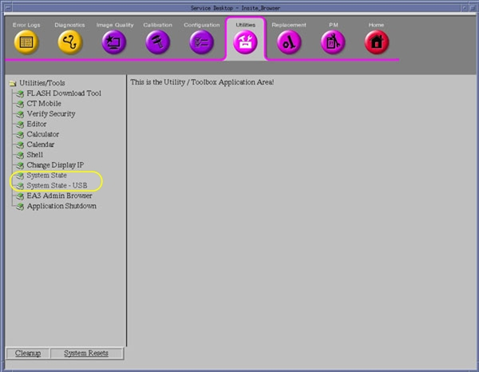
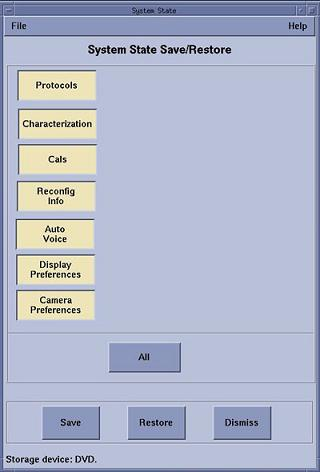
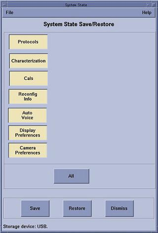
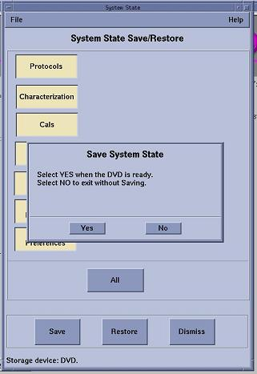
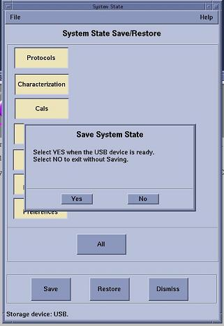
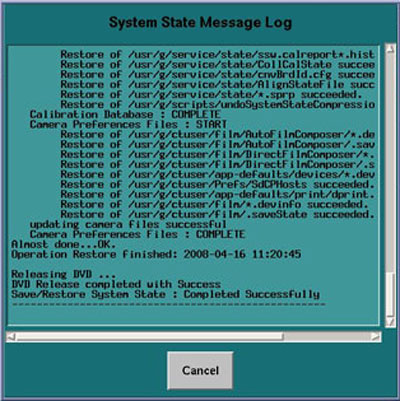
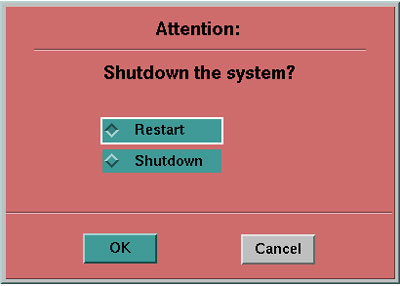

Operating Documentation
Direction 5193574-800, Rev# 22
LightSpeed 7.X Service Methods
Module Version 1.0, Version Date 8/6/12
Operating Documentation |
| Required Persons | Preliminary Reqs | Procedure | Finalization |
|---|---|---|---|
| 1 | 0 min | 20 mins | 10 mins |
| Last revised: | 19 July 2012 |
The following procedures describe and illustrate the System State save and restore process. It is important to follow the steps listed below in order.
| Item | Qty | Effectivity | Part# | Manufacturer |
|---|---|---|---|---|
| DVD-RAM Optical Media | 1 | - | - | - |
| or USB Media (ex: USB Flash Memory Stick or USB External Hard Drive, min: 2 GB) | 1 | - | - | - |
| Condition | Reference | Effectivity |
|---|---|---|
The Console Information Sheet should already be completed and on site from the system installation. This document contains site specific configuration details such as network address, printers and other system options details. Though not needed to perform the following procedure, the Console Information sheet is the fall back source of configuration information if the System State disk is lost or corrupt. | - | - |
Only trained service personnel should service the GE CT Scanner. | - | - |
Before proceeding with Save System State:
Make sure to have formatted DVD-RAM disk.
Or
Have a FAT32 Formatted USB media (either Memory Stick or USB External Drive, minimum of 2 GB).
| NOTE: | System State is a collection of system files saved in
a directory structure. The system uses a default directory name (service_mod_data) on System State backup media. Whenever
System State is saved to DVD-RAM or USB media, the existing default
directory (service_mod_data) is erased when Save All is selected. To avoid loss of a saved System
State, on USB media for example, rename the default directory with
an unique name. (ex: System ID). When a specific System State backup
is being accessed for restoring System State, the directory must be
renamed back to the default directory name of service_mod_data. Due to the default directory name and the directory size, it will not be practical to store multiple System States on a single USB Flash Memory Stick. For emergency backup, it's recommended that System State backups be transferred to a laptop or external USB Hard Drive. Use USB Flash Memory Stick only for the immediate saving and restoring of System State during Load from Cold. |
| NOTE: | Only one USB storage device is permitted to be mounted on the Host subsystem of the Operator Console at any given time. When saving or restoring System State to USB media, make certain that only one USB storage device is plugged in. The last USB Storage device pulled into the console will be the mounted device. Possible devices: USB Memory Stick, Customer USB External Storage Drive, SSA Service Keys. |
Insert the System State DVD-RAM Media into the SCSI Tower DVD-RAM Drive or USB Media in any of the console's USB ports.
Wait until the DVD-RAM Drive or USB Media is ready (i.e., front panel DVD-RAM Drive LED or USB Device Access LED is no longer flashing).
Select: [Service] icon to access the Common Service Desktop (CSD).
Click [OK] as required.
Select: [Utilities] tab.
Illustration 1: Common Service Desktop (CSD), Utilities Tab

Select: [System State] for DVD-RAM Media or [System State - USB] for USB Media. The System State Save/Restore screen appears.
Illustration 2: Save System State Window (DVD-RAM Media)

Illustration 3: Save System State Window (USB Media)

Select [All].
Select [Save]. The System State Media Ready pop-up window appears.
Select [Yes] in the System State Media Ready pop-up window.
Illustration 4: System State DVD Media Ready Pop-up Window

Illustration 5: System State USB Media Ready Pop-up Window

Verify that the "Save" of System State was successful. A message at the end of the System State Message Log Window should state: Save/Restore System State: Completed Successfully.
Illustration 6: System State Message Log Window

When completed, select [Cancel], then [Dismiss].
Close the Common Service Desktop window at the upper left corner of the screen.
Remove System State DVD-RAM disk from the SCSI Tower DVD-RAM Drive or USB Media from USB port. Label System State Backup Media appropriately and place in a safe location.
Insert a previously saved System State DVD-RAM Media into the SCSI Tower DVD-RAM Drive or USB Media in any of the console's USB ports
Wait until the DVD-RAM Drive or USB Media is ready (i.e., front panel DVD-RAM Drive LED or USB Device Access LED is no longer flashing).
Select the [Service] icon to access the CSD (Common Service Desktop).
Select: [Utilities].
Select: [System State] for DVD-RAM Media or [System State - USB] for USB Media. The System State Save/Restore screen appears.
Select [All].
Select [Restore]. The Restore System State box appears.
Select [Yes].
Verify that the "Restore" of System State was successful. If not, restore the System State again. A message at the end of the System State Log window should display: Restore System State Completed Successfully.
When completed, select [Cancel].
Select [Yes] when the Scan Hardware Reset pop-up appears.
When completed, select [Dismiss].
Remove System State DVD-RAM disk from the SCSI Tower DVD-RAM Drive or USB Media from USB port and place in a safe location.
Reboot the Operators Console by selecting [Shutdown] Desktop, then select [Restart] in the Attention Window.
Illustration 7: System Shutdown Attention Window

Verify Save System State
For DVD-RAM Media: Insert System State DVD-RAM disk in SCSI Tower DVD-RAM Drive. Perform Functional Checks>Console>Console GOC5>SCSI Devices Functional Tests – Peripheral Tower DVD - Mount and Un-mount Process found in the service manual and confirm System State files have been saved to disk.
For USB Media: Insert System State USB Media in any PC or Laptop Computer USB port and confirm System State files have been saved to the USB Media.
Verify Restore System State
Visually verify that the system has the correct configuration and preference settings by opening a Terminal Window.
Execute the system configuration script “reconfig”. Review and confirm settings, then press [Quit].